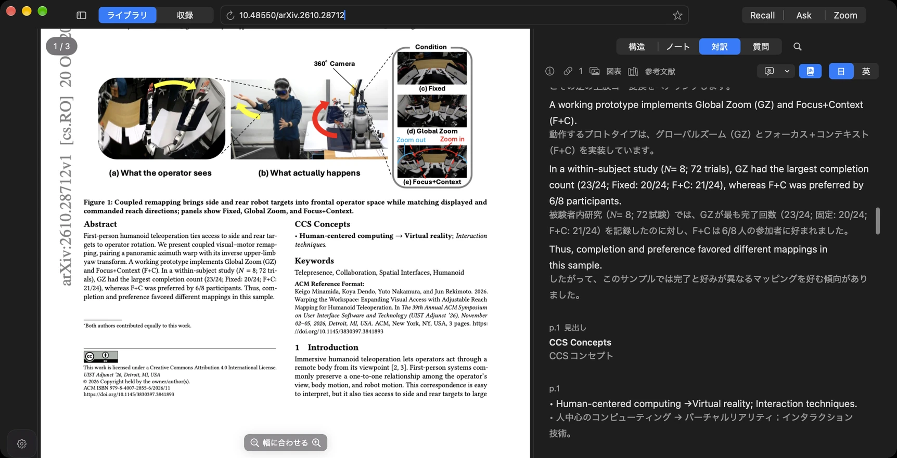

論文・資料Reading
論文を原文と
日本語訳で読む。Read a paper in two languages.
kAIgiでPDFを開き、「対訳を作成」を選びます。原文の段落をダブルクリックすると、隣の欄にその訳が表示されます。Open a PDF in kAIgi and choose Translate. Double-click a paragraph to bring its translation into view beside the original.
論文の表を読む例を見るExplore a table from the paper
PDFや論文のリンクを開く。Start with a PDF or a paper link.
ライブラリでMacにあるPDFを選べます。論文のDOIやURLをアドレス欄に貼り付けると、リンク先からPDFを取得できる場合は、そのまま開けます。Choose a PDF from your Mac in the Library, or paste a paper’s DOI or URL into the address field. kAIgi can open the paper directly when it can retrieve a PDF from that link.
同じライブラリで、接続したフォルダにあるMarkdownのメモやテキストファイルも読めます。研究会の資料と一緒に、自分の読書メモを見返せます。The Library also opens Markdown notes and plain text files from connected folders, so you can revisit your own reading notes alongside the papers from a meeting.
結果を原文の表で確かめる。Check the result against the table.
『Warping the Workspace』では、ロボットを遠隔操作する際の視野の見せ方を3通り比べました。課題を最も多く完了できたのはGlobal Zoom。最も多くの参加者が好んだのはFocus+Contextです。Warping the Workspace compares three views for a robot operator. Participants completed the most trials with Global Zoom, while most preferred Focus+Context.
| 表示条件View | 完了した試行Trials completed | その表示を選んだ人Preference votes |
|---|---|---|
| Fixed | 20 / 24 | 1 / 8 |
| Global Zoom | 23 / 24 | 1 / 8 |
| Focus+Context | 21 / 24 | 6 / 8 |
Warping the Workspace。Keigo Minamida・Koya Dendo（共同筆頭著者）、Yuto Nakamura、Jun Rekimoto。UIST Adjunct ’26。. Keigo Minamida and Koya Dendo (co-first authors), Yuto Nakamura and Jun Rekimoto. UIST Adjunct ’26. CC BY 4.0
読みたい節へ。
次の論文へ。Jump to a section.
Follow a reference.
章立てから本文に戻るNavigate the outline
「構造」には、PDFから読み取った章立てが並びます。要点も読みたいときは「構造を生成」を選びます。準備済みのGemmaかApple Intelligenceがあれば、このMacで段落ごとの要点を作れます。Structure shows the section headings kAIgi finds in the PDF. Choose Generate structure to add paragraph summaries on your Mac with a prepared Gemma model or Apple Intelligence.
参考文献から原著を開くOpen a cited paper
参考文献にDOIがあれば、そのリンクをたどれます。リンクのない文献は、タイトルでCrossrefやJ-STAGEを検索できます。Follow a DOI in the references to the cited work. When a reference has no link, you can search Crossref or J-STAGE by title.